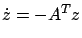
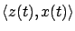
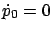
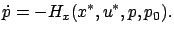
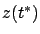
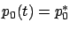
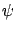
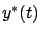

As we already mentioned on page ![[*]](crossref.gif) , two (time-varying) linear systems of the form
, two (time-varying) linear systems of the form  and
and

are called adjoint to each other. Solutions of adjoint systems are linked by the property that their inner product
remains constant, as shown by the following simple calculation:

We now consider a specific pair of adjoint systems on the time
interval  . As the first system (the
. As the first system (the  -system in the
above discussion) we take the variational
equation (4.19), described in more detail by the
equations (4.20) and (4.21). The second,
adjoint system is then
-system in the
above discussion) we take the variational
equation (4.19), described in more detail by the
equations (4.20) and (4.21). The second,
adjoint system is then

while the rest of the system (4.31) becomes

Now, let us specify the terminal condition for the system (4.31) at time

equal to the vector (4.28). Further, we relabel the
for all
which is the second canonical equation in (4.1). With a slight abuse of terminology, we will sometimes refer to this differential equation as the adjoint equation. It is easy to see that the first canonical equation in (4.1) also holds by the definition of

of the variational equation (4.19).The vector (4.28), which is normal to the separating hyperplane, is nonzero. Since (4.31) is a homogeneous (unforced) linear time-varying system, we have

. We can then associate the solution of the adjoint system to a family of hyperplanes that is ``flowing back" along the optimal trajectory. In view of (4.32), the perturbed trajectory associated with always remains on the same side of the hyperplane.

![$\displaystyle \begin{pmatrix}p_0^* \\ p^*(t) \end{pmatrix}\ne 0\qquad \forall\,t\in[t_0,t^*]$](img1215.gif)